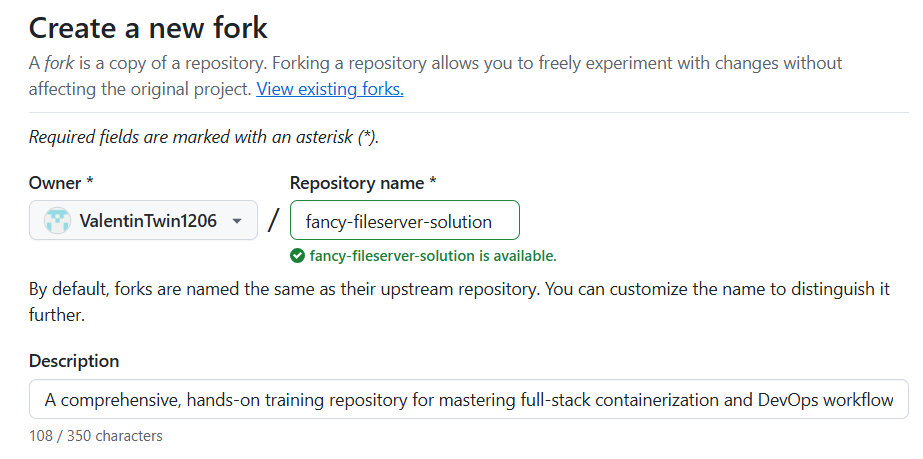
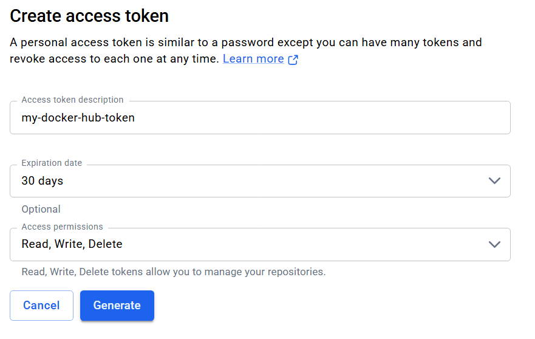

| Secret Name | Description |
|---|---|
APIKEY_JWT_SECRET |
A secure random string used as JWT secret for API key authentication |
COOKIE_SECRET |
A secure random string for cookie encryption (at least 32 characters long) |
SYS_USER_FIRST |
Firstname for the system admin user |
SYS_USER_LAST |
Lastname for the system admin user |
SYS_USER_MAIL |
Email for the system admin user |
SYS_USER_PASS |
Password for the system admin user |
SYS_USER_USERNAME |
Username for the system admin |
TEST_USER_PASS |
Password for the test user (dev environment) |
DOCKER_PAT |
Docker Hub Personal Access Token (created in previous step) |
| Variable Name | Description |
|---|---|
DOCKER_USERNAME |
Your Docker Hub username |
DOCKER_REPOSITORY |
Docker Hub repository path (e.g., yourusername/fancy-fileserver) |
TEST_USER_USERNAME |
Username for the test user (e.g., testuser) |
README.md file. Once started, open
a web browser and navigate to http://localhost:5173/login
and click on the Register button to get the Registration form rendered.
The following test functions and modules have a footprint for the user registration process:
login.hbs - Add a select dropdown with options: Diverse (d), Female (f), Male (m)users.model.js - Add the sexuality field as a required field of type enumdatabase.js - Update the sysadmin and testuser registration to include the sexuality fielddatabase.js - Update the fake user seeding to include the sexuality field.env-dev - Add SYSADMIN_SEXUALITY and TEST_USER_SEXUALITY environment variables.env-prod - Add SYSADMIN_SEXUALITY and TEST_USER_SEXUALITY environment variablestests/e2e/fixtures/test-users.json - Add sexuality field to all user objectstests/e2e/helpers/test-helpers.js - Update registerUser() functiontests/e2e/api/api.e2e.tests.bats - Update POST /users tests (CREATED, CONFLICT, BAD REQUEST)tests/e2e/gui/register-user.spec.js - Update inline registration form filling to include sexuality field selectiontests/load/helpers/test-helpers.cjs - Update createRandomUser()tests/load/api/api-flows.yml - Add sexuality: "{{ randomUser.sexuality }}" to POST requestDockerfile and docker-compose.yml configurations contain several security weaknesses that could expose the application to potential vulnerabilities.
To gain a first impression of container hardening techniques, we will use
Docker Bench for Security.
This tool provides excellent awareness of container security fundamentals and common misconfigurations.
cd ~
git clone https://github.com/docker/docker-bench-security.git
cd docker-bench-securitydocker stop $(docker ps -q)docker compose --profile dev up -dsudo sh docker-bench-security.sh -i fancy_fileserver_devThe following changes can help increase your Docker Bench Security score:
Dockerfile - Harden the container image configuration by specifying a non-privileged userdocker-compose.yml - Add a healthcheck to monitor container healthdocker-compose.yml - Add deploy.resources.limits for CPU (cpus: '0.50') and memory (memory: 512M)docker-compose.yml - Add security_opt: [no-new-privileges:true] to prevent privilege escalationdocker-compose.yml - Set read_only: true and add tmpfs: [/tmp] for temporary file storagedocker-compose.yml - Add pids_limit: 100 to limit process spawningdocker-compose.yml - Create a custom bridge network (secure_network) instead of using the default bridgedocker pull kalilinux/kali-rollingdocker run -it --network host kalilinux/kali-rolling /bin/bashapt-get update && apt-get upgrade -yapt-get install -y nmap gobuster wordlists dirb hydragunzip /usr/share/wordlists/rockyou.txt.gzdocker inspect -f '{{range .NetworkSettings.Networks}}{{.IPAddress}}{{end}}' fancy_fileserver_devnmap {IP_ADDRESS}gobuster dir -u http://{IP_ADDRESS}:3000 -w /usr/share/wordlists/dirb/common.txt/login returning status 200,
indicating it's directly accessible. We'll concentrate on this route to perform a brute-force attack
and test the application's password security.
hydra -l testuser5678 -P /usr/share/wordlists/rockyou.txt "http-get-form://172.18.0.4:3000/login:username=^USER^&password=^PASS^:F=Invalid credentials" -t 4login.hbs - Implement password validation for the registration processpackage.json - Integrate validator NPM libraryusers.model.js - Implement strong password validation using the isStrongPassword() method from the validator libraryusers.model.js - Add validate: { validator: isStrongPassword } to the password field in users.model.jsReal world applications require monitoring to observe performance and reliability. As an application administrator it is essential to have a monitoring solution in place to ensure the application is running smoothly and to quickly identify and resolve any issues that may arise. Within this chapter you are going to extend the FancyFileServer application with a monitoring stack consisting of InfluxDB and Grafana. InfluxDB is a powerful time-series database that allows you to store and query metrics efficiently, while Grafana provides a user-friendly interface for visualizing and analyzing the collected data. Both applications will be provided as OCI images and integrated into the existing Docker Compose setup. By the end of this chapter, you will have a fully functional monitoring stack that can be used to track the performance and health of your application in real-time. It also helps you to gain experience in setting up and configuring monitoring tools, which is a crucial skill for any application administrator or DevOps engineer.
The following figure may help you to understand the architecture of the monitoring stack and how it integrates with the Fancy FileServer application in regards to the user growth. The frontend application offers the user registration functionality on /register that requests the backend API on /api/v1/users to create a new user. The backend API then persists the new user in the MongoDB database and at the same time writes a metric within the statistics.middleware.js file to InfluxDB on our newly created writeUserGrowth function. Grafana is connected to InfluxDB as a data source and visualizes the user growth in a dashboard.
In a first step we are going to set up InfluxDB as our time-series database for storing application metrics. Since we are going to provide InfluxDB as an OCI image, we can easily integrate it into our existing docker-compose.yaml file.
| Variable Name | Description |
|---|---|
image |
influxdb:2.7 |
container_name |
influxdb |
profiles |
["dev", "prod"] |
ports |
8086:8086 |
environment |
|
ipv4_address |
172.20.0.40 (must be integrated in the fancy_fileserver network) |
volumes |
influxdb_data:/var/lib/influxdb2 |
healthcheck:
test: ["CMD", "curl", "-f", "http://localhost:8086/ping"]
interval: 5s
timeout: 3s
retries: 10volumes:
mongo_data:
redis_data:
influxdb_data:Since we have prepared our docker-compose.yml, we need to slightly modify our devcontainer.json file to smoothly integrate InfluxDB into our setup.
| Variable Name | Description |
|---|---|
runServices |
influxdb |
forwardPorts |
8086 |
portsAttributes |
"8086": {
"label": "InfluxDB",
"onAutoForward": "silent"
} |
Now everything is defined to spin up an InfluxDB instance within our Fancy FileServer ecosystem. Restart the entire Docker Compose setup to apply the changes.
Once the compose setup is running, open your web browser at http://localhost:8086. The InfluxDB UI should appear.
Use the USERNAME and PASSWORD from your environment variables to log in.
If InfluxDB loads correctly and you can log in, your setup is complete and ready for further integration with Grafana or metric collection pipelines.
Now it is time to write some data into the InfluxDB. In the next step we want to integrate the InfluxDB client into the FancyFileServer with the overall goal to:
At the very first beginning we need to install the InfluxDB BunJS client as described here https://docs.influxdata.com/influxdb/v2/api-guide/client-libraries/nodejs/install/. Add the client to your package.json file.
@influxdata/influxdb-clientNow we need to implement the InfluxDB client instance in our application. To not start from scratch we have provided a influx.js file in the config folder. The file contains different NOTE instructions to guide you through the implementation. You can always refer to the official documentation for writing to InfluxDB.
// e.g. this is how a variable is defined from the environment
const INFLUX_URL = process.env.INFLUXDB_URLconst point1 = new Point('temperature')
.tag('sensor_id', 'TLM010')
.floatField('value', 24)method - the HTTP method of the requestpath - the path of the requeststatus_code - the status code of the responseNow we have implemented the client and defined the points, but we haven't integrated the functions into the statistics.middleware.js file which is the logical integration point for our InfluxDB client since it is responsible for tracking API requests and user statistics. To fullfill the task, your need to modify the statistics.middleware.js file according to the NOTE instructions.
// reffering our functions can be done via the app.influx object, e.g.
app.influx.writeUserGrowth('registration');Finally, we need to set up the client to be used on application start up. This can be done within the index.js file. You can refer to the NOTE instructions within the file to implement the setup function and to call it on application start up. Take the Setup Cache snippet as a template for your implementation.
//
// Setup Cache
//
try {
app.log.info('Trying to setup cache.');
await setupCache(app);
app.log.debug('Cache setup completed successfully.');
} catch (err) {
app.log.error("Failed to setup cache");
app.log.error(err.message);
process.exit(1);
}From a code side of view everything should be prepared now to write data into InfluxDB so let's try it out.
Congratulation, you have successfully connected your Fancy Fileserver application with InfluxDB. In a next step we are going to connect the current setup with an additional Grafana Dashboard, useable to track various kinds of application metrices.
| Variable Name | Description |
|---|---|
image |
grafana/grafana:10.4.0 |
container_name |
grafana |
profiles |
["dev", "prod"] |
ports |
3001:3000 |
environment |
|
ipv4_address |
172.20.0.50 (must be integrated in the fancy_fileserver network) |
volumes |
grafana_data:/var/lib/grafana |
Since we have prepared our docker-compose.yml, we need to slightly modify our devcontainer.json file to smoothly integrate Grafana into our setup.
| Variable Name | Description |
|---|---|
runServices |
grafana |
forwardPorts |
3001 |
portsAttributes |
"3001": {
"label": "Grafana",
"onAutoForward": "silent"
} |
Now everything is defined to spin up an Grafana instance within our Fancy FileServer ecosystem. Restart the entire Docker Compose setup to apply the changes.
If you followed the steps correctly, you should be able to open Grafana on http://localhost:3001. Use the credentials defined in the environment variables to log in.
We set up InfluxDB and Grafana, now we need to connect both applications to be able to visualize the data stored in InfluxDB with Grafana. To do this, we need to add InfluxDB as a data source in Grafana.
Name: <your influxdb connection name>URL: enter http://influxdb:8086 (this is the internal URL of the InfluxDB container within the Docker network)Database: api_metrics (as defined in the docker-compose.yml file)User: <your InfluxDB admin user>(as defined in the docker-compose.yml file)Token: <your InfluxDB admin token> (as defined in the docker-compose.yml file)from(bucket: "api_metrics")
|> range(start: v.timeRangeStart, stop: v.timeRangeStop)
|> filter(fn: (r) => r._measurement == "user_growth" and r._field == "count")
|> map(fn: (r) => ({ r with _value: if r.event == "deletion" then -r._value else r._value }))
|> cumulativeSum()
|> yield(name: "total_users")User Growth, the unit to short and set the decimals to 0.FancyFileServer Dashboard
Now everything should be set up to visualize the user growth in Grafana. To verify this, you can go back to the registration form of the frontend application
on http://localhost:5173 and register a new user.
After the registration, you should see a new entry in the InfluxDB and the user growth panel in Grafana should update accordingly showing the increase in users.
To add some more users to our panel we can use our api smoke tests which are located in the tests/api/smoke folder. Connect with our devcontainer and run the tests with the following command:
bun run test:load:smoke:api # API smoke testbun run test:load:spike:api # API spike testCongratulation, you have successfully integrated a Grafana Dashboard for the user growth over time to our FancyFileServer project.